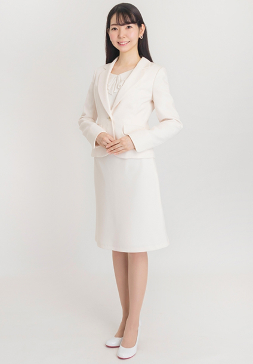

PROFILE
中野 えり



中野 えりEri Nakano
| カテゴリ | MC/司会、モデル、コンパニオン |
|---|---|
| 言語 | バイリンガル英語 |
| 地域 | 関東 |
| 身長 | 165cm |
| 趣味 | ゴルフ、ヨガ |
| 特技 | 料理 |
| 資格 | 秘書技能検定2級 |
| 参考URL | |
| 音声サンプル |
経歴
【MC】
- HR future conference2026
- コクヨワークプレイスショー
- primeNumber DATA SUMMIT
- ITI Fellow & SCD会議
- テクマトリックスCRM FORUM
- 東京おもちゃショー/タカラトミー（ブルーイコーナー）
- 東京おもちゃショー/タカラトミー（リカちゃんコーナー）
- ジムトフ/向洋技研
- CareTEX東京/ジーコム
- 人とくるまのテクノロジー/日本ゼオン
- Google Cloud Generative AI Summit Tokyo24
- IPF JAPAN/日本ゼオン 実演デモ
- スマート工場EXPO/オムロンソフトウェア
- 某保険会社ウェビナー
- 住宅展示場レンジャーショー
- バルーンアート教室イベント
- 働き方改革expo/日東工業
- ルミネキャンペーン
- レコード店キャンペーン
【モデル】
- UR「ユージと一緒にお部屋をおしゃれにDIY」WEB
- 治療院マーケティング研究所 整体DVDモデル
- アセッパHPモデル
- L25モデル
- 相席居酒屋モデル
- マイナビウーマン内花王アクアレーベルモデル
- ハニーチェ 動画モデル
【ハンドモデル】
- ダイレクトテレショップ 真空容器 ハンドモデル
- オムロンドライヤー ハンドモデル
- 富士通ゼネラル「nocria」リモコンHowto動画 ハンドモデル
【ステージアテンド】
- システムファイブカスタマーパーティー
- ニュースキン表彰式
- 丸善 大阪万博公式ショップオープニングセレモニー
- ガールズアワード ウクライナ支援コーナー
- ガールズアワード 湘南美容外科コンテスト
- 渋谷サクラテラステープカットセレモニー
- AWS授賞式
- Yahooクリエイティブアワード
- 千葉駅新駅舎開業式典
- ガールズ競輪グランプリ表彰式
- イルミネーション点灯式
【コンパニオン】
- セミコンジャパン/リガク（英語）
- 東京モーターショー/グッドイヤー
- 東京ゲームショウ/GREE
- 東京ゲームショウ/ソニー
- 東京モーターサイクルショー/ハーレーダビッドソン
- 東京モーターサイクルショー/インディアン
- CEATEC/三菱電機
- インターロップ
- 情報セキュリティエクスポ
- CP＋
- 鉄道技術展
- ゴルフフェア
- エコプロ
- ドラッグストアショー
- ビューティーワールド
- GirlsAward イオンウォーター
- ULTRAJAPAN
- So2 メントス
- フィリップモリスフェスプロモーション
- フィリップモリスナイトプロモーション 他多数